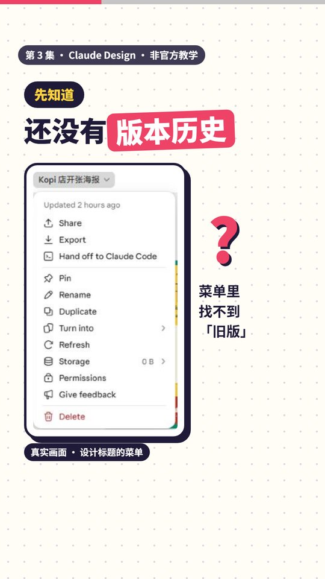
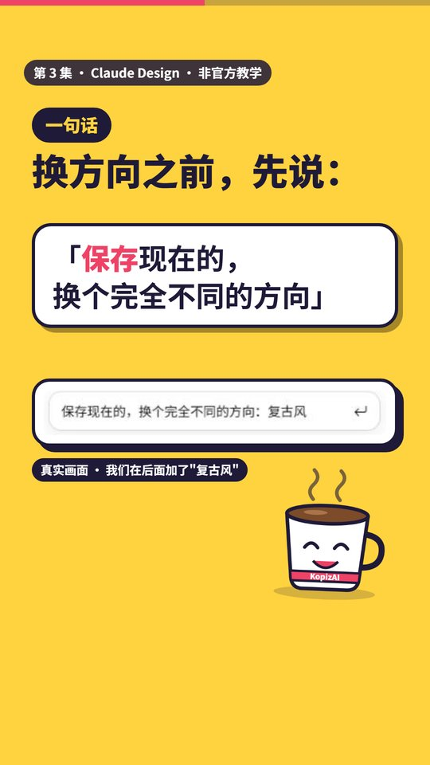
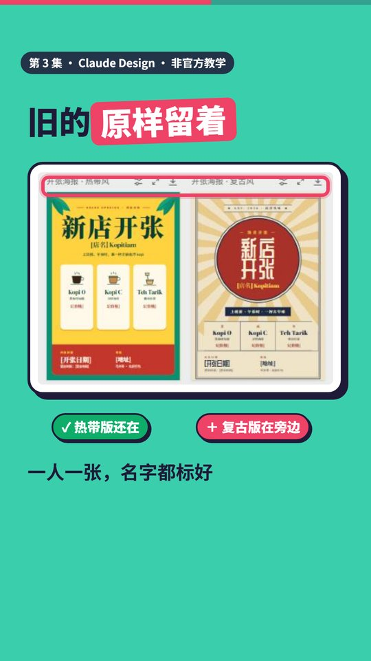
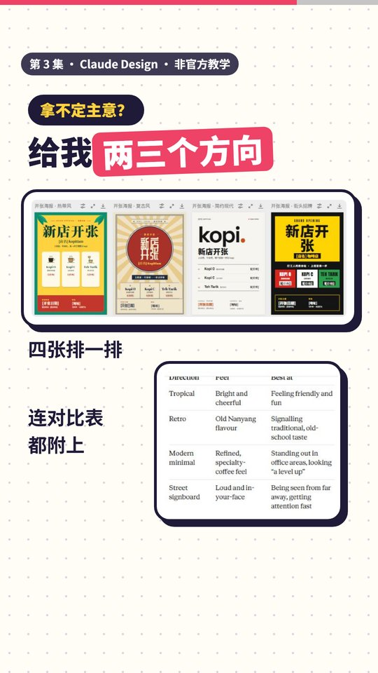
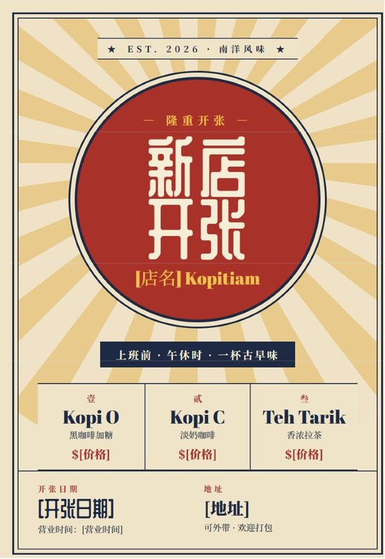
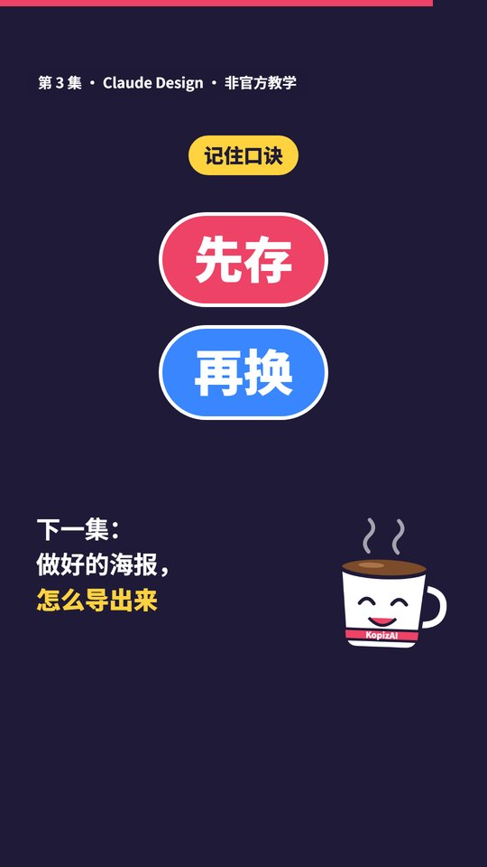

第 3 集 · 换个方向，旧的不丢
一句话： 想试新风格又舍不得现在这版，先对 Claude 说"保存现在的，换个完全不同的方向"。先存，再换。
对照官方文档和真实界面核对日期：2026-11-12 ｜ 时长 43 秒 ｜ 非官方教学
先知道一件事
Claude Design 现在还没有版本历史（官方说明"已知限制"里写的）。设计标题旁的菜单里有 Share、Export、Duplicate 等，但找不到"回到旧版"。所以想大改方向之前，先让 Claude 把现在这版留好。

跟着做
第一步：换方向之前，说这句（视频 00:15）
在 Design 旁边的对话框里打：
保存现在的，换个完全不同的方向：复古风
冒号后面换成你想试的风格。

第二步：旧的原样留着，新的在旁边（视频 00:21）
我们实际试的时候，Claude 把原来的热带风海报原样留着，在画布上旁边新做了一张复古风，两张画板分别标着"热带风""复古风"。

第三步：还拿不定？要两三个方向（视频 00:25）
还是拿不定主意，给我两三个方向
这次 Claude 又加了"简约现代""街头招牌"两张，四张排一排，还附了一张对比表（每种风格的感觉、适合什么场合）。对比表不一定每次都有，没有的话可以直接请它比一比。

四个方向长这样


口诀
先存，再换。

时间点
| 时间 | 内容 |
|---|---|
| 00:00 | 想换风格，又舍不得这版 |
| 00:03 | 老板要复古风，你喜欢现在这版 |
| 00:10 | Claude Design 还没有版本历史 |
| 00:15 | 换方向之前说："保存现在的，换个完全不同的方向" |
| 00:21 | 旧的原样留着，新的放旁边 |
| 00:25 | 拿不定主意？要两三个方向 |
| 00:34 | 口诀，下一集预告 |
顺便知道
- 也可以自己手动备份：点设计标题旁的小箭头，选 Duplicate，整份设计复制一份。
- 只是改错了一步？按 Ctrl+Z（Mac 是 Cmd+Z）撤销。
- 选中一张画板按 Ctrl+D（Mac 是 Cmd+D）可以复制那一张。
- 官方说明里，这句话的英文原文是 "Save what we have and try a completely different approach"，用中文讲一样有效（我们就是用中文试的）。
来源：Claude 帮助中心《Get started with Claude Design》（Manage versions and revisions、Known limitations、Tips for best results 几节） https://support.claude.com/en/articles/14604416-get-started-with-claude-design